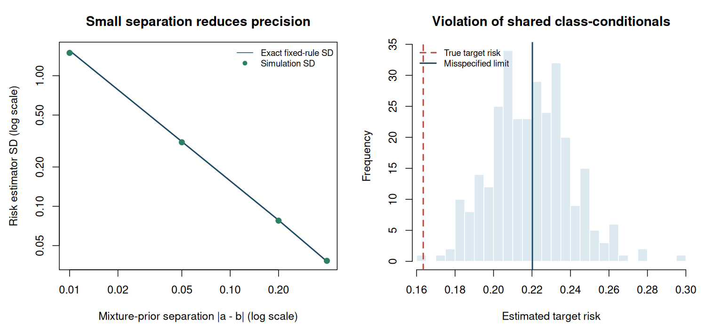

5. Learning from two unlabelled mixtures#
Topics of Statistical Learning · Week 5
Where the supervision comes from#
Unlabelled–unlabelled learning uses two collections without individual class labels. It is not ordinary clustering: the aim is to predict a specified positive or negative class, and aggregate information about the two collections supplies supervision. The basic model assumes that their class proportions are known and different, while their class-conditional feature distributions are shared.
The central calculation is a two-by-two linear inversion. It reveals both why learning is possible and why nearly equal mixture proportions produce unstable risk estimates. This chapter treats the prior information as known so the identification argument is transparent; estimating it requires additional assumptions and analysis.
The two-mixture model and target population#
Let \(P_+\) and \(P_-\) be the positive- and negative-class feature distributions. We observe independent samples from
where \(a,b\in[0,1]\) are known and \(a\ne b\). Usually both are strictly between zero and one, so both collections are genuinely unlabelled mixtures. The target population has a separately specified positive prior \(\pi\), giving risk
The target prior need not equal \(a\) or \(b\). Setting \(\pi=1/2\) deliberately evaluates balanced risk. It does not establish that either observed collection, or the application population, is balanced.
The assumption of common \(P_+\) and \(P_-\) is essential. Different feature distributions in the two collections must arise from their class proportions under this model. A change in measurement instruments or in the positive-class population can violate that relationship even when the proportions are known accurately.
Inverting the mixtures#
For any measurable set, the two mixture equations form a linear system with determinant \(a-b\). Its inverse yields the distribution identities
These are identities between probability measures under the assumed model, although their right sides contain signed coefficients. Their population values remain non-negative measures. Empirical versions need not have every property of a probability distribution in a finite sample.
For an integrable function \(h\), the same equations hold with distributions replaced by expectations. Apply the first to \(\ell_+\) and the second to \(\ell_-\):
Replacing these expectations with sample averages gives an unbiased estimator for a fixed rule under the known-prior model. As in PU learning, fitting a rule and selecting its tuning parameters require further control of generalization and optimization. Unbiasedness for a fixed rule is not a universal guarantee for every learning algorithm.
Worked example 5.1 — Recovering class-specific error from aggregate information
Let \(a=0.8\), \(b=0.2\), and let a classifier predict positive on a feature region \(A\). Suppose \(Q_1(A)=0.69\) and \(Q_2(A)=0.36\). Inversion gives
The classifier therefore has false-negative rate \(0.20\) and false-positive rate \(0.25\). At target prior \(\pi=0.4\), its error is \(0.4(0.20)+0.6(0.25)=0.23\). Its balanced error is \(0.225\).
Neither observed collection was labelled at the individual level. The different, known mixing proportions made the two class-specific probabilities recoverable. Predicting which collection an observation came from is a related but different classification problem.
Why small prior separation is a statistical problem#
Let \(h_1\) and \(h_2\) collect the coefficients of the losses in the two expectations:
For independent sample sizes \(n_1,n_2\) and a fixed rule,
The coefficients contain \(1/(a-b)\). In typical nondegenerate examples, variance is amplified at the scale \(1/(a-b)^2\). Particular losses and rules can create cancellations, so the exact variance is the appropriate quantity to inspect.
For balanced zero–one risk of a threshold classifier predicting positive when \(X>t\), write \(F_k=P_{Q_k}(X\leq t)\). The estimator simplifies to
and its variance is
Worked example 5.2 — An unbiased estimate outside the probability range
Let \(P_+=N(1,1)\), \(P_-=N(-1,1)\), \(t=0\), and \(\pi=1/2\). The true classification risk is \(\Phi(-1)\approx0.1587\). Take \(n_1=n_2=500\) and fix \(a=0.7\).
When \(b=0.3\), the fixed-rule risk estimator has standard deviation about \(0.038\). When \(b=0.69\), the standard deviation is about \(1.52\). Both estimators remain unbiased under the model, but the second often falls below zero or above one.
This is not a floating-point error. The two collections contain little information for separating their latent class contributions. Clipping the result to \([0,1]\) changes the estimator and generally introduces bias. At \(a=b\), the displayed inverse is undefined and the basic two-mixture model no longer identifies the class-specific distributions without additional restrictions.
Identification failures and links to PU learning#
If \(a=b\), both observed distributions give the same mixture equation. An unrestricted pair \((P_+,P_-)\) cannot generally be recovered from that single equation. If the proportions themselves are unknown, even their difference and class orientation need not be identifiable from the observed distributions alone. Extra assumptions can change this conclusion, but they must be stated explicitly.
If class-conditionals differ between collections, the algebra is solving the wrong system. A larger sample can then concentrate the risk estimate around an incorrect limit. Sensitivity experiments should examine this structural failure as well as finite-sample variability.
PU learning is a useful special case: set \(a=1\) so \(Q_1=P_+\) and set \(b=\pi\) so \(Q_2\) is the target feature marginal. Substitution reduces the UU expression to \(\pi E_+\ell_+ + E_U\ell_- -\pi E_+\ell_-\). This unification concerns observation distributions and risk identities; it does not make a set of ordinary clustering labels into positive-class supervision.
R laboratory — Prior separation and assumption failure#
The lab holds one threshold classifier fixed and repeatedly estimates its balanced target risk. It compares four values of \(b\) while keeping \(a=0.7\), reports empirical and exact standard deviations, and records the fraction of estimates outside \([0,1]\). A final experiment shifts the positive-class mean in the second collection and compares the misspecified correction’s analytic limit with its simulation average.
Known latent classes are used only inside the generator. The risk estimator receives features and supplied proportions, not individual class labels. The analytic reference risk is available to the evaluator because the simulation model is specified.
Code
# Topics of Statistical Learning
# Lab 05: Two-unlabelled-mixture risk estimation and instability
# Base R only. Run with: Rscript 05-uu-learning.R
set.seed(2026102105)
target_prior <- 0.5
a <- 0.7
b_values <- c(0.3, 0.5, 0.65, 0.69)
n_each <- 500L
n_rep <- 1000L
threshold <- 0.2
positive_mean <- 1
negative_mean <- -1
sample_mixture <- function(n, proportion, positive_location = positive_mean) {
# Labels are internal to simulation and never passed to the risk estimator.
latent_y <- rbinom(n, 1L, proportion)
rnorm(n, mean = ifelse(latent_y == 1L, positive_location, negative_mean))
}
mixture_cdf <- function(proportion, positive_location = positive_mean) {
proportion * pnorm(threshold, positive_location) +
(1 - proportion) * pnorm(threshold, negative_mean)
}
risk_from_features <- function(x1, x2, a, b, target_prior) {
if (abs(a - b) < 1e-12) stop("Distinct known mixture priors are required.")
loss1_positive <- mean(x1 <= threshold)
loss2_positive <- mean(x2 <= threshold)
loss1_negative <- 1 - loss1_positive
loss2_negative <- 1 - loss2_positive
target_prior * ((1 - b) * loss1_positive - (1 - a) * loss2_positive) / (a - b) +
(1 - target_prior) * (a * loss2_negative - b * loss1_negative) / (a - b)
}
true_risk <- target_prior * pnorm(threshold, positive_mean) +
(1 - target_prior) * (1 - pnorm(threshold, negative_mean))
estimates <- matrix(NA_real_, n_rep, length(b_values))
summary_table <- do.call(rbind, lapply(seq_along(b_values), function(j) {
b <- b_values[j]
for (r in seq_len(n_rep)) {
estimates[r, j] <<- risk_from_features(sample_mixture(n_each, a),
sample_mixture(n_each, b),
a, b, target_prior)
}
value <- estimates[, j]
f1 <- mixture_cdf(a)
f2 <- mixture_cdf(b)
coefficient1 <- (target_prior + b - 2 * target_prior * b) / (a - b)
coefficient2 <- (target_prior + a - 2 * target_prior * a) / (a - b)
exact_sd <- sqrt(coefficient1^2 * f1 * (1 - f1) / n_each +
coefficient2^2 * f2 * (1 - f2) / n_each)
data.frame(a = a, b = b, prior_gap = a - b, mean_risk = mean(value),
bias = mean(value) - true_risk, empirical_SD = sd(value),
exact_SD = exact_sd, mean_MCSE = sd(value) / sqrt(n_rep),
fraction_outside_0_1 = mean(value < 0 | value > 1))
}))
cat("Target prior:", target_prior, "; threshold:", threshold, "\n")
cat("Independent samples per replication:", n_each, "from each mixture\n")
cat("Replications:", n_rep, "; analytic target risk:", true_risk, "\n\n")
print(summary_table, digits = 5, row.names = FALSE)
# Misspecification: only the positive class in mixture 2 is shifted.
b_shift <- 0.3
shifted_positive_mean <- 1.75
f1 <- mixture_cdf(a)
f2_shift <- mixture_cdf(b_shift, shifted_positive_mean)
correction_limit <- target_prior * ((1 - b_shift) * f1 -
(1 - a) * f2_shift) / (a - b_shift) +
(1 - target_prior) * (a * (1 - f2_shift) -
b_shift * (1 - f1)) / (a - b_shift)
shift_estimates <- replicate(300L, {
risk_from_features(sample_mixture(2000L, a),
sample_mixture(2000L, b_shift, shifted_positive_mean),
a, b_shift, target_prior)
})
cat("\nCommon-class-conditional assumption violated in mixture 2:\n")
print(data.frame(target_risk = true_risk, misspecified_limit = correction_limit,
simulated_mean = mean(shift_estimates),
mean_MCSE = sd(shift_estimates) / sqrt(length(shift_estimates)),
asymptotic_bias = correction_limit - true_risk),
digits = 5, row.names = FALSE)
cat("\nThe target population still uses positive mean 1 and negative mean -1.\n")
cat("Larger samples reduce variability around the misspecified limit, not its bias.\n")
figure_dir <- Sys.getenv("COURSE_FIGURE_DIR", unset = "")
if (nzchar(figure_dir)) {
dir.create(figure_dir, recursive = TRUE, showWarnings = FALSE)
png(file.path(figure_dir, "05-uu-learning.png"), width = 1500,
height = 700, res = 140, type = "cairo")
par(mfrow = c(1, 2), mar = c(4.5, 4.5, 3.2, 1.2))
plot(summary_table$prior_gap, summary_table$exact_SD, type = "l", log = "xy",
lwd = 2, col = "#1B4965", xlab = "Mixture-prior separation |a - b| (log scale)",
ylab = "Risk estimator SD (log scale)", main = "Small separation reduces precision")
points(summary_table$prior_gap, summary_table$empirical_SD,
pch = 19, col = "#2D8063", cex = 1.1)
legend("topright", c("Exact fixed-rule SD", "Simulation SD"),
col = c("#1B4965", "#2D8063"), lty = c(1, NA), pch = c(NA, 19),
bty = "n", cex = 0.8)
hist(shift_estimates, breaks = 24L, col = "#DDE9F1", border = "white",
xlim = range(c(true_risk, shift_estimates)), xlab = "Estimated target risk",
main = "Violation of shared class-conditionals")
abline(v = true_risk, lwd = 2, lty = 2, col = "#B44A3D")
abline(v = correction_limit, lwd = 2, col = "#1B4965")
legend("topleft", c("True target risk", "Misspecified limit"),
col = c("#B44A3D", "#1B4965"), lty = c(2, 1), lwd = 2, bty = "n", cex = 0.8)
invisible(dev.off())
}
stopifnot(all(is.finite(estimates)),
all(is.finite(shift_estimates)),
all(summary_table$exact_SD > 0))
Executed laboratory output#
Output
Target prior: 0.5 ; threshold: 0.2
Independent samples per replication: 500 from each mixture
Replications: 1000 ; analytic target risk: 0.1634625
a b prior_gap mean_risk bias empirical_SD exact_SD mean_MCSE
0.7 0.30 0.40 0.16297 -0.00048753 0.038230 0.037876 0.0012089
0.7 0.50 0.20 0.15915 -0.00431253 0.077636 0.078280 0.0024551
0.7 0.65 0.05 0.17360 0.01013747 0.309276 0.312986 0.0097802
0.7 0.69 0.01 0.25130 0.08783747 1.495712 1.559242 0.0472986
fraction_outside_0_1
0.000
0.018
0.296
0.724
Common-class-conditional assumption violated in mixture 2:
target_risk misspecified_limit simulated_mean mean_MCSE asymptotic_bias
0.16346 0.22019 0.21973 0.0011821 0.056732
The target population still uses positive mean 1 and negative mean -1.
Larger samples reduce variability around the misspecified limit, not its bias.


Exercises#
Verify both measure inversions by substitution. Why is the condition \(a\ne b\) necessary for this argument?
Substitute \(a=1\) and \(b=\pi\) into the UU risk identity and recover the PU identity.
Derive the balanced zero–one estimator and its variance. Why must the two sample sizes appear separately?
If the separation \(|a-b|\) is approximately halved while other variance factors remain similar, how should both sample sizes change to maintain approximately the same precision?
What is the difference between fixing an unstable finite-sample estimate and fixing a violated common-class-conditional assumption?
Worked solutions
1. The coefficient of \(P_+\) in the first numerator is \(a(1-b)-b(1-a)=a-b\), and the coefficient of \(P_-\) is zero. The second identity is analogous. At equal priors the matrix is singular and this cancellation does not provide an inverse.
2. The first bracket becomes \(\pi E_+\ell_+\). The second becomes \(E_U\ell_- -\pi E_+\ell_-\) because \(a-b=1-\pi\). Their sum is the PU expression.
3. For a threshold rule, \(\ell_+=\mathbf1(X\leq t)\) and \(\ell_-=1-\ell_+\). At \(\pi=1/2\), collecting constants gives the stated estimator. Independent Bernoulli sample means have variances \(F_k(1-F_k)/n_k\); the two independent samples may have different sizes and different event probabilities.
4. Increase both sizes by approximately a factor of four. This compensates for the squared inverse separation, provided the remaining variance terms are comparable. It does not repair exact equality of the priors.
5. More observations or appropriate regularization can improve a noisy but correctly specified estimator. Structural misspecification changes what the expression estimates. Addressing it requires an observation model, target, or data source that matches the application, not simply more repetitions of the same biased procedure.
Primary readings#
Lu et al. (2019), “On the Minimal Supervision for Training Any Binary Classifier from Only Unlabeled Data”: the two-mixture risk formulation and its learning theory.
Lu et al. (2020), “Mitigating Overfitting in Supervised Classification from Two Unlabeled Datasets: A Consistent Risk Correction Approach”: correction of empirical risks in flexible UU learning.
Lu et al. (2021), “Binary Classification from Multiple Unlabeled Datasets via Surrogate Set Classification”: an optional extension beyond two collections.
Connection to the next block: Preference data replace an absolute class label with a comparison. We will again ask which target the observation mechanism identifies before fitting a model.